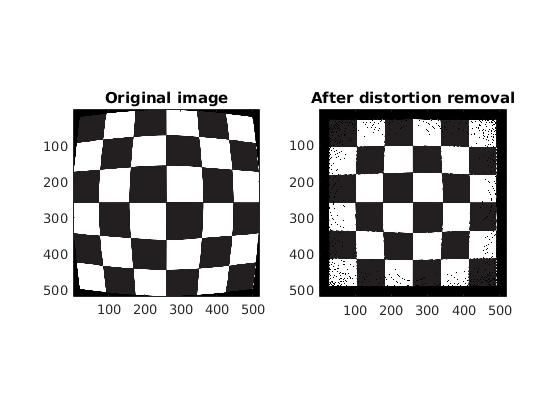

Contents
MyMainScript
tic;
Your code here
im = imread('../input/rad_checkerbox.jpg');
[numrow, numcol, colors] = size(im);
ans_im = zeros(numrow, numcol, colors);
pixel_x = zeros(numrow, numcol);
pixel_y = zeros(numrow, numcol);
for i=1:numrow
for j=1:numcol
pixel_x(i, j) = 2*(i)/numrow -1;
pixel_y(i, j) = 2*(j)/numcol -1;
end;
end;
num_iterations = 220;
delta = 0.0005;
for i1=1:num_iterations
max_x = 0;
max_y = 0;
for i=1:numrow
for j=1:numcol
r = sqrt(pixel_x(i,j)^2 + pixel_y(i,j)^2);
new_x = pixel_x(i,j)/(1 - delta*(r+0.5*(r^2)));
new_y = pixel_y(i,j)/(1 - delta*(r+0.5*(r^2)));
pixel_x(i,j) = new_x;
if new_x>max_x
max_x = new_x;
end;
pixel_y(i,j) = new_y;
if new_y>max_y
max_y = new_y;
end;
end;
end;
pixel_x = pixel_x/max_x;
pixel_y = pixel_y/max_y;
end;
for i=1:numrow
for j=1:numcol
ans_x = round((pixel_x(i,j)+1)*numrow/2);
ans_y = round((pixel_y(i,j)+1)*numcol/2);
ans_im(ans_x, ans_y, 1) = im(i,j, 1);
ans_im(ans_x, ans_y, 2) = im(i,j, 2);
ans_im(ans_x, ans_y, 3) = im(i,j, 3);
end;
end;
output
figure(1);
subplot(1, 2, 1);
imagesc(im);
title('Original image');
daspect ([1 1 1]);
subplot(1, 2, 2);
imagesc(uint8(ans_im));
title('After distortion removal');
daspect ([1 1 1]);
imwrite((uint8(ans_im)), '../output/checkerbox.jpg');
toc;
Elapsed time is 8.811159 seconds.
